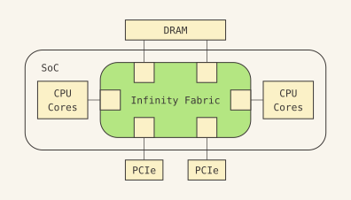
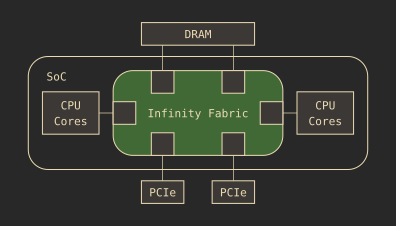
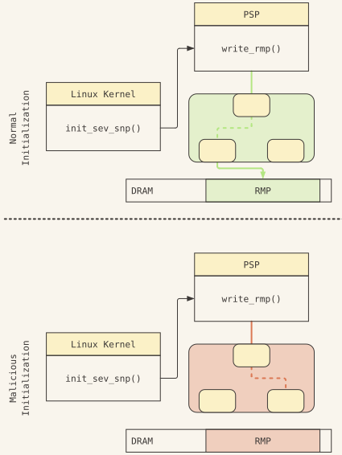
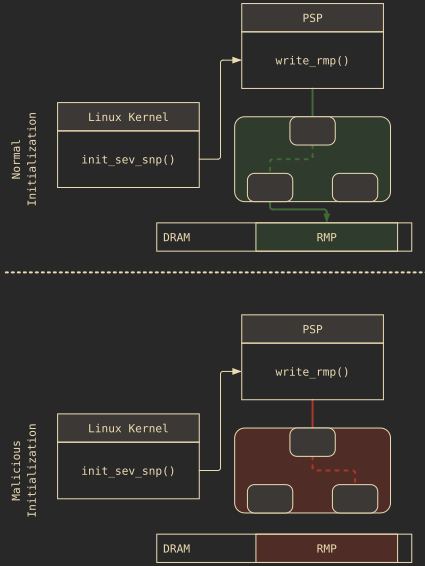

Title here
Summary here
Confidential computing allows cloud tenants to offload sensitive computations and data to remote resources without needing to trust the cloud service provider. Hardware-based trusted execution environments, like AMD SEV-SNP, achieve this by creating Confidential Virtual Machines (CVMs). With Fabricked, we present a novel software-based attack that manipulates memory routing to compromise AMD SEV-SNP. By redirecting memory transactions, a malicious hypervisor can deceive the secure co-processor (PSP) into improperly initializing SEV-SNP. This enables the attacker to perform arbitrary read and write access within the CVM address space, thus breaking SEV-SNP core security guarantees.
Standard cloud environments expose tenant computation and data in use to potentially untrusted cloud service providers. Confidential computing addresses this by using Confidential Virtual Machines (CVMs): hardware-shielded environments that isolate active workloads and guarantee complete data privacy from the host. Secure Encrypted Virtualization-Secure Nested Paging (SEV-SNP) is an AMD hardware extension that enables CVMs on AMD server CPUs.
Modern AMD System-on-Chips (SoCs) use a chiplet-based architecture. The core idea is to manufacture individual CPU blocks on separate dies and link them together via a high-speed interconnect. While this design significantly improves manufacturing yields, it also introduces complexity in inter-component communication. AMD addresses this with the Infinity Fabric, which is responsible for coherent data transport, memory routing, and address mapping across CPU cores, memory controllers, and peripheral devices. Because platform configurations vary between different systems and boot sequences, the Infinity Fabric must be dynamically configured during every CPU boot sequence. AMD delegates parts of this configuration process to the motherboard firmware, also known as BIOS or UEFI.


In the confidential computing threat model, the UEFI is untrusted and cloud provider controlled. In Fabricked, we first identify that the untrusted UEFI is in charge of locking down parts of the Infinity Fabric configuration. As an attacker, we modify the UEFI to skip these API calls. This leaves the Infinity Fabric configurable by the attacker even after SEV-SNP is activated on the machine.
The attacker, i.e., a malicious hypervisor, can therefore modify the Infinity Fabric to re-route DRAM memory transactions. Since the Infinity Fabric connects not only the CPU cores but also the secure co-processor (PSP) to the DRAM, we can manipulate PSP read/write operations to DRAM. We use this attacker capability to compromise SEV-SNP initialization. Specifically, we identify that during the SEV-SNP initialization, the PSP sets up a critical data structure, the RMP, that enforces memory access control rules to CVM memory. During this setup, the PSP has to perform memory writes to the DRAM. By misconfiguring the Infinity Fabric before these PSP writes, we are able to drop them. This results in an uninitialized RMP, i.e., it remains completely unchanged, retaining its insecure default entries set up by the malicious hypervisor. In other words, by using Fabricked, the attacker bypasses parts of the SEV-SNP initialization while tricking it into believing it succeeded. When the victim launches CVMs subsequently on the platform, the hypervisor can access its memory as the RMP enforcement is useless for all practical purposes.


Fabricked is possible due to two critical flaws. First, the hypervisor can maliciously corrupt some Infinity Fabrics routing rules. Second, when the security co-processor subsequently issues memory requests, the corrupted routing rules take precedence over the correct ones — silently misdirecting writes that should have initialized the RMP.
Fabricked operates as a fully deterministic, software-only exploit with a 100% success probability. It does not depend on any code running inside the victim CVM and requires no physical access to the hardware.
We confirmed the vulnerability on AMD Zen 5 EPYC processors running SEV-SNP. However, the AMD advisory also lists firmware updates for Zen 3 and Zen 4 processors.
We informed AMD about the vulnerability on 3rd August 2025. After the discussion with AMD PSIRT, we agreed on an embargo date of 14th April 2026.
AMD acknowledges the vulnerability to be in-scope and issued an advisory under the following link. Fabricked was assigned CVE-2025-54510.
To cite our paper, please use the following BibTeX entry:
@inproceedings{schlueter2026fabricked,
title={{Fabricked: Misconfiguring Infinity Fabric to Break AMD SEV-SNP}},
author={Benedict Schl{\"u}ter and Christoph Wech and Shweta Shinde},
booktitle={35th USENIX Security Symposium (USENIX Security 26)},
year={2026},
month = aug,
address = {Baltimore, MD},
publisher = {USENIX Association},
}